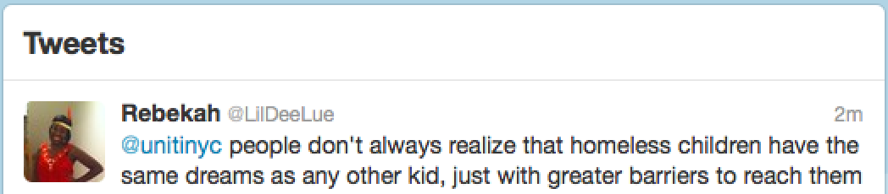
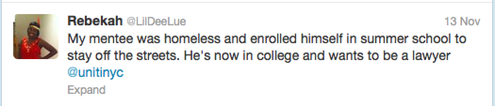
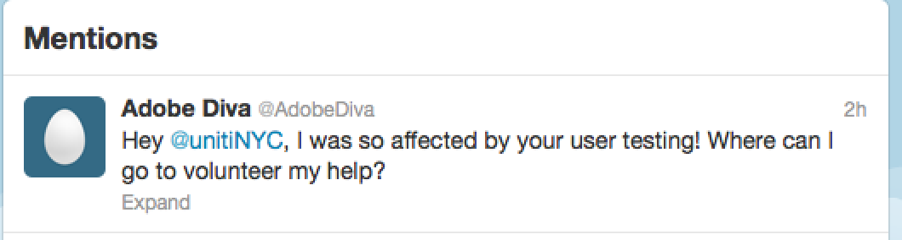

Next steps:
Social Media
Part of the power of Uniti comes from communication and people spreading out words. Social Media will be a great platform for Uniti to raise awareness and for people to interact with and learn more about Uniti. During user testing, we created a Twitter account and asked people to tweet to us their thoughts and stories. Although given the number of users tested, the number of tweets we received was limited, the potential is big. Here are some examples:
  
{kind=link}
{kind=link}
{kind=link}
Uniti will benefit from establishing its social media presence on platforms such as Twitter, Facebook and Blogger.
Statistics
Users have reported that the statistics in the Fact book were sometimes a bit confusing. In order to present accurate but intriguing facts in the form of the globules, more research will be needed.
Donation
Raising awareness is a big part of Uniti's mission, but awareness also comes hand in hand with action. Users asked about the ways in which they can help. Uniti should create the possibility for them to help.
{kind=link}
{kind=link}
Homelessness among children in New York City is only the tip of the iceberg of bigger issues, such as homelessness in general, gap between rich and poor, social injustice and social welfare and so on. Uniti hopes to gradually expand to bigger issues and bring awareness to all these issues. For example, after people start to be aware of homeless children, Uniti can start bring awareness to homelessness in general using the same presentation of facts. Uniti holds the belief that people need to work together to solve these problems.